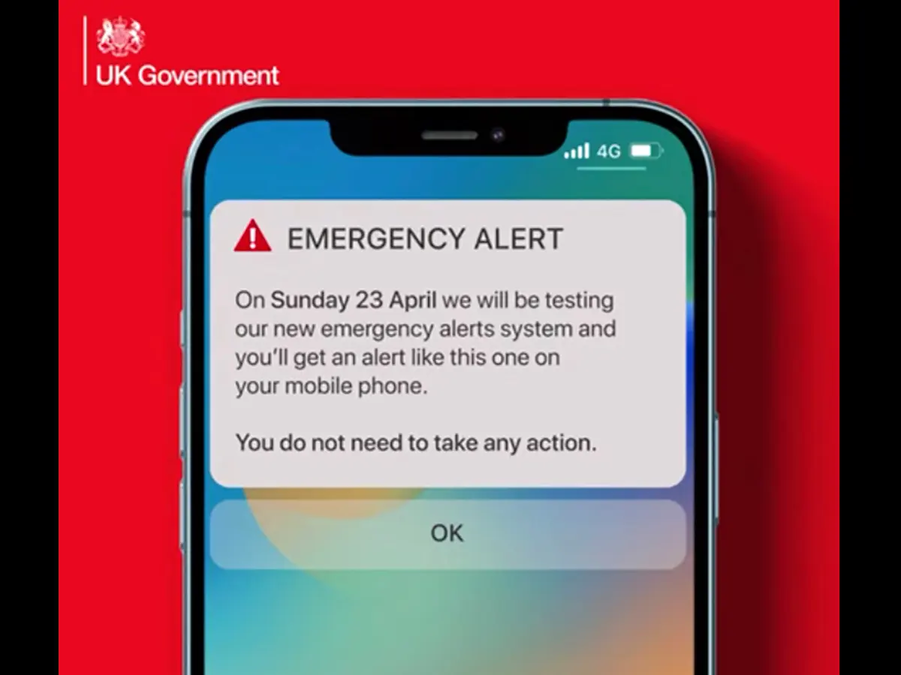

Despite the fact that the test will take place simultaneously with the London Marathon and multiple Premier League games, authorities have stated that the potential disruption is worthwhile in order to familiarize you with the appearance of genuine future alerts.

A nationwide test of the UK's emergency alert service will take place at 3pm on Sunday 23 April.
Notifications, accompanied by a sound and vibration that will cease after 10 seconds, will appear on mobile phones nationwide. To dismiss the notification, individuals can simply tap "OK" or swipe it away, without the need for any additional action. The alert will make a sound even if a person's phone is switched on to silent.
The government has stated that the system would only be utilized in critical situations that endanger life, such as severe weather events like the wildfires and flooding observed last year. This system has been under development for roughly three years and has the capability to send alerts to designated regions, irrespective of their size. For instance, an alert can be issued to all residents of a village in the path of an impending river overflow.
Countries such as the US, Canada, the Netherlands, Greece, and Japan have already implemented comparable services. However, it is improbable that this service will be employed during an ongoing terrorist attack as the attackers may also receive the alert. Nevertheless, judgments regarding the implementation of the service will be made when necessary.
According to Oliver Dowden, the Cabinet Office minister, this alert has the potential to one day become "the sound that saves your life".
As per the government, conducting the test is crucial to ensure that people can distinguish a genuine alert that provides clear instructions on responding to an emergency. However, these alerts are anticipated to be dispatched exceptionally seldom, solely during situations when there is an imminent danger to life. Consequently, it could be several months or even years before an individual receives such an alert.
There are apprehensions that the alert may have negative consequences for individuals experiencing domestic abuse, who have a secret phone hidden from their abuser.
Nonetheless, the government has reported working with institutions that support vulnerable women and girls to ensure they are not affected adversely. Individuals who must keep their phones hidden have been informed that they have the choice to exclude themselves from the system or switch off their phones prior to 3 pm on Sunday.
Users of iPhones and Android phones and tablets have the option to access the settings and search for "emergency alerts," where they can disable "severe alerts" and "emergency alerts."